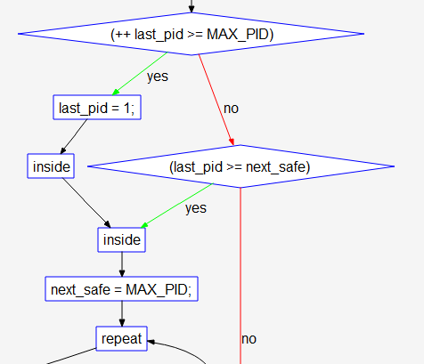
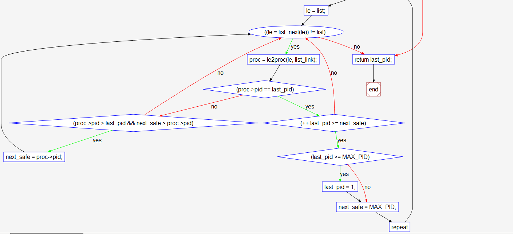

[TOC]
练习2：为新创建的内核线程分配资源（需要编码）
创建一个内核线程需要分配和设置好很多资源。kernel_thread函数通过调用do_fork函数完成具体内核线程的创建工作。do_kernel函数会调用alloc_proc函数来分配并初始化一个进程控制块，但alloc_proc只是找到了一小块内存用以记录进程的必要信息，并没有实际分配这些资源。ucore一般通过do_fork实际创建新的内核线程。do_fork的作用是，创建当前内核线程的一个副本，它们的执行上下文、代码、数据都一样，但是存储位置不同。在这个过程中，需要给新内核线程分配资源，并且复制原进程的状态。你需要完成在kern/process/proc.c中的do_fork函数中的处理过程。它的大致执行步骤包括：
- 调用alloc_proc，首先获得一块用户信息块。
- 为进程分配一个内核栈。
- 复制原进程的内存管理信息到新进程（但内核线程不必做此事）
- 复制原进程上下文到新进程
- 将新进程添加到进程列表
- 唤醒新进程
- 返回新进程号
请在实验报告中简要说明你的设计实现过程。请回答如下问题：
- 请说明ucore是否做到给每个新fork的线程一个唯一的id？请说明你的分析和理由。
/* do_fork - parent process for a new child process
* @clone_flags: used to guide how to clone the child process
* @stack: the parent's user stack pointer. if stack==0, It means to fork a kernel thread.
* @tf: the trapframe info, which will be copied to child process's proc->tf
*/
int
do_fork(uint32_t clone_flags, uintptr_t stack, struct trapframe *tf) {
int ret = -E_NO_FREE_PROC; //进程or线程超过最大数量的错误代码
struct proc_struct *proc;
if (nr_process >= MAX_PROCESS) { //超过最大数量直接返回前面的那个错误代码'-E_NO_FREE_PROC'
goto fork_out;
}
ret = -E_NO_MEM; //内存不足创建失败
//LAB4:EXERCISE2 YOUR CODE
/*
* Some Useful MACROs, Functions and DEFINEs, you can use them in below implementation.
* MACROs or Functions:
* alloc_proc: create a proc struct and init fields (lab4:exercise1)
* setup_kstack: alloc pages with size KSTACKPAGE as process kernel stack
* copy_mm: process "proc" duplicate OR share process "current"'s mm according clone_flags
* if clone_flags & CLONE_VM, then "share" ; else "duplicate"
* copy_thread: setup the trapframe on the process's kernel stack top and
* setup the kernel entry point and stack of process
* hash_proc: add proc into proc hash_list
* get_pid: alloc a unique pid for process
* wakeup_proc: set proc->state = PROC_RUNNABLE
* VARIABLES:
* proc_list: the process set's list
* nr_process: the number of process set
*/
// 1. call alloc_proc to allocate a proc_struct
// 2. call setup_kstack to allocate a kernel stack for child process
// 3. call copy_mm to dup OR share mm according clone_flag
// 4. call copy_thread to setup tf & context in proc_struct
// 5. insert proc_struct into hash_list && proc_list
// 6. call wakeup_proc to make the new child process RUNNABLE
// 7. set ret vaule using child proc's pid
if( (proc = alloc_proc()) == NULL ) goto fork_out;
//我没想到设置下面一句
proc->parent = current;
if( setup_kstack(proc) != 0 ) goto bad_fork_cleanup_proc; //此时内核堆栈分配失败直接释放proc占用的空间
//此时内存空间分配失败需要释放之前分配的内核堆栈,然后这个执行完会执行后面的kfree(proc)释放proc占用的空间
if( copy_mm(clone_flags, proc) != 0 ) goto bad_fork_cleanup_kstack;
//参考了答案：esp是stack
copy_thread(proc, stack, tf);
//参考了答案:关中断！！并把分配pid和加入两个list都放到关中断期间执行的代码中
bool intr_flag;
local_intr_save(intr_flag);
{
proc->pid = get_pid();
hash_proc(proc);
// list_add(&proc_list, &(proc->list_link));
set_links(proc);
// nr_process ++;
}
local_intr_restore(intr_flag); //开中断
wakeup_proc(proc);
ret = proc->pid;
fork_out:
return ret;
bad_fork_cleanup_kstack:
put_kstack(proc);
bad_fork_cleanup_proc:
kfree(proc);
goto fork_out;
}
问题回答
分配的时候关中断,保证无冲突,下面就是分析具体的get_pid的代码了
#define MAX_PROCESS 4096
#define MAX_PID (MAX_PROCESS * 2)
// 定义了PID的数目大于PROCESS的数目,防止出现PID不够？
// 代码有点复杂,直接看流程图！！在最下面
// get_pid - alloc a unique pid for process
static int
get_pid(void) {
static_assert(MAX_PID > MAX_PROCESS);
struct proc_struct *proc;
list_entry_t *list = &proc_list, *le;
static int next_safe = MAX_PID, last_pid = MAX_PID;
if (++ last_pid >= MAX_PID) {
last_pid = 1;
goto inside;
}
if (last_pid >= next_safe) {
inside:
next_safe = MAX_PID;
repeat:
le = list;
while ((le = list_next(le)) != list) {
proc = le2proc(le, list_link);
if (proc->pid == last_pid) {
if (++ last_pid >= next_safe) {
if (last_pid >= MAX_PID) {
last_pid = 1;
}
next_safe = MAX_PID;
goto repeat;
}
}
else if (proc->pid > last_pid && next_safe > proc->pid) {
next_safe = proc->pid;
}
}
}
return last_pid;
}
流程图从第一个if开始


先把两个变量看成一个区间$[$last->pid, nextsafe$]$,可以方便理解：
- 首先last_pid++和MAX_PID比较,这个肯定YES,然后跳到last_pid = 1,跳到inside判断
- 首先把next_safe设为最大MAX_PID，然后开始下面的循环判断
- 首先令le为list,然后对list中的proc进行轮询
- 如果proc->pid 恰好就是 last_pid 那现在就是proc->pid处于区间$[$last->pid, nextsafe$]$的最左侧位置，然后就对last_pid+1,因为现在有和 last_pid 重复的pid(要保持pid的唯一)
- 紧接着判断last->pid是否超出了最大的限制MAX_PID，如果超出就要重新把last_pid置为1开始新一轮的轮询
- 如果last->pid没有超出范围，但是根据前一个判断知道last->pid超出了next_safe的范围因此把区间的右侧直接扩展到最大值——next_safe设为MAX_PID(因为之前的循环可能改变next_safe，所以它不是不变的)
- 如果proc->pid不是last_pid那就剩下三种情况：proc->pid在区间中(不包括端点)、在区间外(两侧共两种)
- 然后判断是否在区间内，如果在就令next_safe为proc->pid缩小范围
- 如果proc->pid 恰好就是 last_pid 那现在就是proc->pid处于区间$[$last->pid, nextsafe$]$的最左侧位置，然后就对last_pid+1,因为现在有和 last_pid 重复的pid(要保持pid的唯一)
- 根据之前的循环流程可知last_pid必为所需唯一pid，返回即可
- 首先令le为list,然后对list中的proc进行轮询